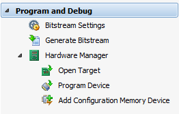

The Program and Debug environment is opened when the Hardware Manager is selected from the Flow Navigator, or the open_hw command is run from the Tcl Console. To create the Program and Debug environment you must connect to a hardware server and hardware target using the Open New Hardware Target wizard.
When the Program and Debug environment is already open, you can activate the environment by clicking Program and Debug in the Flow Navigator.
|
From the Program and Debug environment you can:
|
 |
See Also
 |
Vivado Design Hub - Programming and Debug |
 |
Vivado Design Suite QuickTake Video: Logic Debug in Vivado |